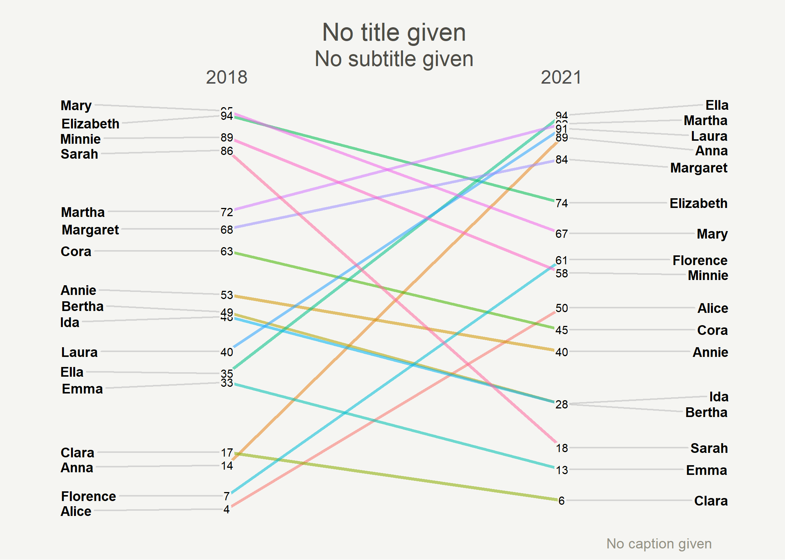
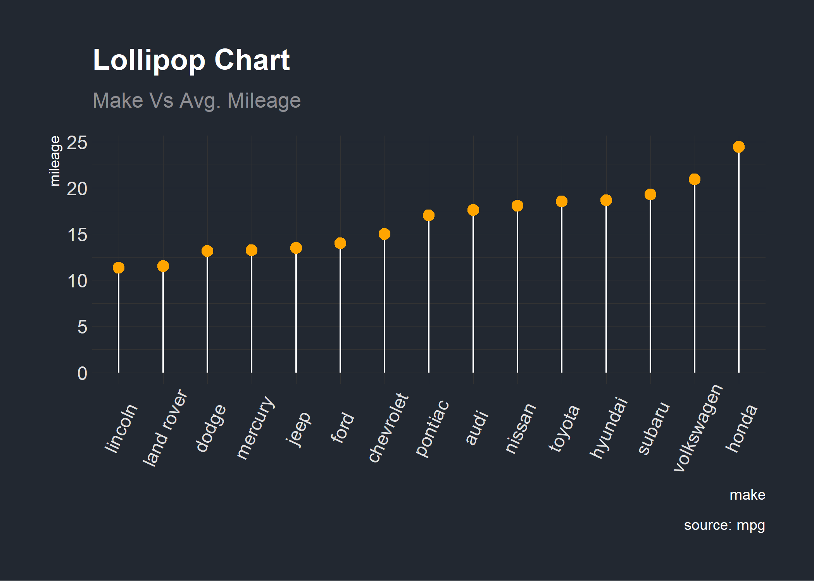

The goal of HohgantR is to serve as a toolbox filled with all the miscellaneous functions that might be useful one day, or not…
Installation
You can install the latest version of HohgantR from GitHub with:
# install.packages("devtools")
devtools::install_github("BBieri/HohgantR")A release on CRAN is not planned as the package is intended to serve as a “cabinet de curiosités” of R functions.
Slope charts à la Tufte
A ggplot2 graphing function inspired by and updated from this great package.
library(HohgantR)
HohgantR::indicators_long |>
dplyr::filter(indicator == "Indicator") |> # Filter by indicator if necessary
ggslope(year, value, DisaggregationLevel) # Plot things
Bernie’s theme
A ggplot2 theme for Bernie’s blog.
library(HohgantR)
library(tidyverse)
#> Warning: package 'tidyverse' was built under R version 4.2.2
#> Warning: package 'ggplot2' was built under R version 4.2.2
#> Warning: package 'readr' was built under R version 4.2.2
#> Warning: package 'stringr' was built under R version 4.2.2
# Prepare data
cty_mpg <- aggregate(mpg$cty, by = list(mpg$manufacturer), FUN = mean)
colnames(cty_mpg) <- c("make", "mileage") # change column names
cty_mpg <- cty_mpg[order(cty_mpg$mileage), ] # sort
cty_mpg$make <- factor(cty_mpg$make, levels = cty_mpg$make)
# Plot
ggplot(cty_mpg, aes(x = make, y = mileage)) +
geom_segment(aes(
x = make,
xend = make,
y = 0,
yend = mileage
), color = "white") +
geom_point(size = 3, color = "orange") +
labs(
title = "Lollipop Chart",
subtitle = "Make Vs Avg. Mileage",
caption = "source: mpg"
) +
HohgantR::themebernie() +
theme(axis.text.x = element_text(angle = 65, vjust = 0.6))
Mineral theme
A ggplot2 theme inspired by minerals.
library(HohgantR)
library(tidyverse)
# Prepare data
cty_mpg <- aggregate(mpg$cty, by = list(mpg$manufacturer), FUN = mean)
colnames(cty_mpg) <- c("make", "mileage") # change column names
cty_mpg <- cty_mpg[order(cty_mpg$mileage), ] # sort
cty_mpg$make <- factor(cty_mpg$make, levels = cty_mpg$make)
# Plot
ggplot(cty_mpg, aes(x = make, y = mileage)) +
geom_segment(aes(
x = make,
xend = make,
y = 0,
yend = mileage
), color = "white") +
geom_point(size = 3, color = "#C3CED6") +
labs(
title = "Lollipop Chart",
subtitle = "Make Vs Avg. Mileage",
caption = "source: mpg"
) +
HohgantR::thememineral() +
theme(axis.text.x = element_text(angle = 65, vjust = 0.6))